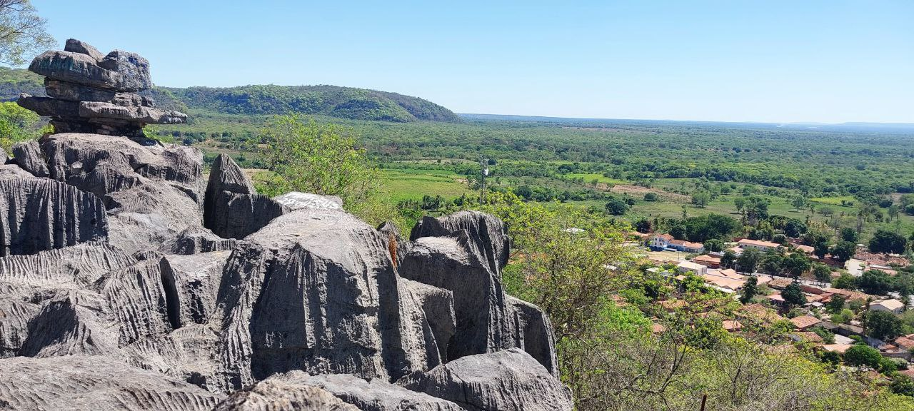

Sobre o Local
Assistir ao nascer do sol no Mirante do Brejo do Amparo é uma experiência simplesmente inesquecível.
O mirante oferece uma vista panorâmica deslumbrante da comunidade, da cidade e do majestoso Rio São Francisco, sendo um dos pontos mais especiais para contemplação da paisagem natural e urbana da região.
O acesso se dá por uma trilha de dificuldade moderada, com cerca de 380 metros de extensão e um ganho de altitude de aproximadamente 59 metros. Situado no Monumento Natural Cárstico do Morro de Brejo do Amparo, uma Unidade de Conservação Municipal, o local também serve de ponto de partida para a Gruta dos Anjos.
Horário de funcionamento: Visitação livre diariamente
Tipo de visita: Visita livre
Formas de pagamento: Não há cobrança para acesso
Contato: Não há
Site: Não há